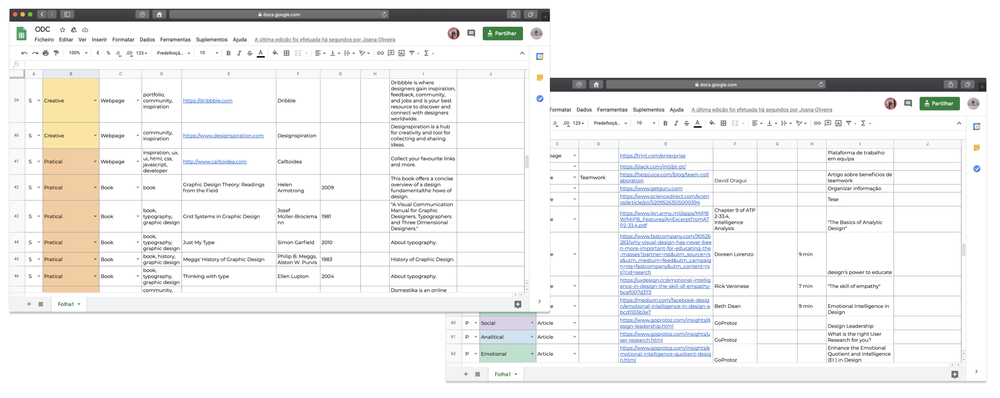

Content references
The content provided in the product was divided into five intelligences: practical, analitycal,
creative, emotional and social. Different types of media were collected as content reference:
books, magazines, articles, webpages, apps, podcasts, videos, newsletters and others. A total of
142 references were collected for content.
After a selection process and an analysis of references, in which we normalize the references
for each of the intelligences and filter by relevance. Thus, 125 references were included in the
product.
